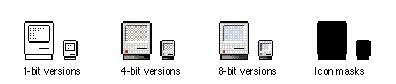
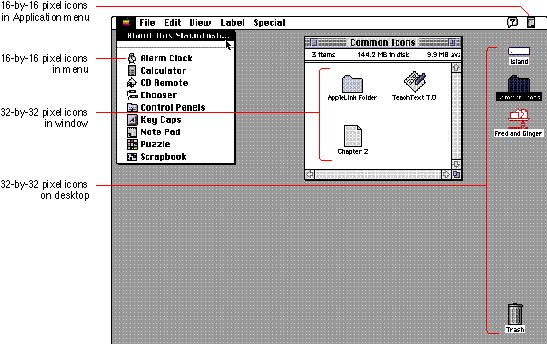

|
The Finder Icon FamilyFor display in the Finder, for each icon you should provide an entire icon family, which consists of large (32-by-32 pixel) and small (16-by-16 pixel) icons, each available in three different versions of color: black and white (1-bit color), 4-bit color, and 8-bit color. You also need to provide an icon mask for each size of icon. The Finder uses the icon mask to cut out space on the desktop for the display of the icon. Figure 8-17 shows a family of icons for System 7. The 32-by-32 pixel icons appear on the desktop, and, if the user chooses "by Icon" from the View menu, these icons also appear in Finder windows. The 16-by-16 pixel icon appears as the Application menu's title when your application is active. It also appears next to your application's name in the Application menu and in Finder windows when the user chooses "by Small Icon" from the View menu. Figure 8-18 shows examples of two sizes of icons and some instances of where they appear in the Macintosh interface. Figure 8-18 Different sizes of icons  You can also provide icons for other entities that your application creates, such as customized document icons, preferences file icons, and stationery icons. The entire group of icons that you distribute with your product is known as a suite of icons. A suite of icons includes the families of icons for each type of icon that you distribute. A monitor displays the highest-quality icon that its screen allows. Table 8-1 shows which icons are displayed on monitors with different display capabilities based on the icon families that you provide. Table 8-1 Icon display on monitors of different bit depths
See the chapter "Finder Interface" in Inside Macintosh: Macintosh Toolbox Essentials for information about the icons you provide and how to create a bundle resource for your application. |